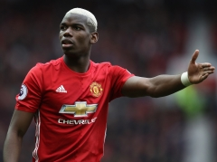

Enter Website> Enter
News and Features

Pogba deserves more respect
Jose Mourinho explains why he feels Paul Pogba is being unfairly treated by football pundits. Continue TOP

Mourinho: Pogba deserves more respect
Jose Mourinho believes Paul Pogba deserves more respect from football pundits as he continues to be an influential performer for Manchester United in his first season back at the club. The Frenchman's record price tag means his performances can be subject to media scrutiny but at Wednesday's pre-match press conference, Mourinho reiterated that everybody at the club is happy with the midfielder's contribution. The manager feels the player, who turns 24 today, is having to deal with undue criticism and suggests that envy may be a factor in the flak. "I feel that the world is losing values and we all know that and envy is coming into certain levels," said Mourinho, on the eve of United's second leg against FC Rostov. "I'm scared for especially the next generation if things go in this direction. Envy is everywhere. "It's not Paul's fault that he gets 10 times the money that some players, some very good players, got in the past. It's not his fault that some of the pundits are in real trouble with their lives and they need every pound to survive and Paul is a multi-millionaire. It's not his fault. "I think he deserves respect. I think his family deserve respect. He's a kid that comes from a working family, a family with three boys and I'm sure they needed a lot of food on that table every day because they are big giants. So I'm sure that the mum and the dad had to work hard for many, many years for them. "He is a kid that came to Manchester as a teenager, that fought for his career here, that was not afraid to move and to go to another country and to look for better conditions for him. A kid that reached the top of the world with his work, nobody gave him anything. "I'm very happy with Paul. The club is very happy with Paul and I think also a good thing is that because of his personality, he doesn't given an ass what people say." Return